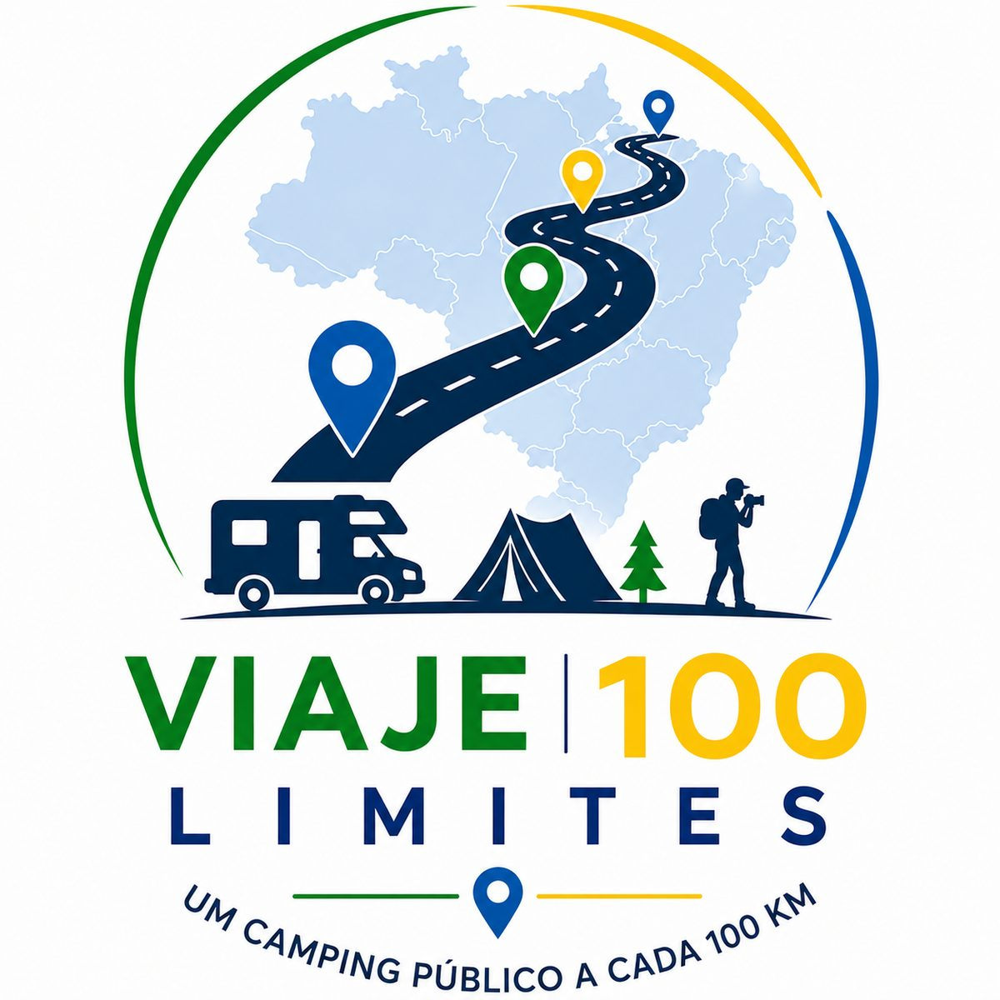
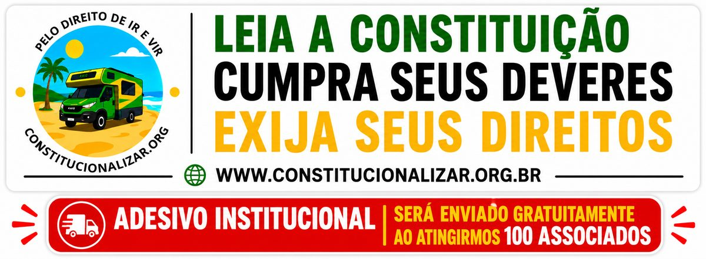
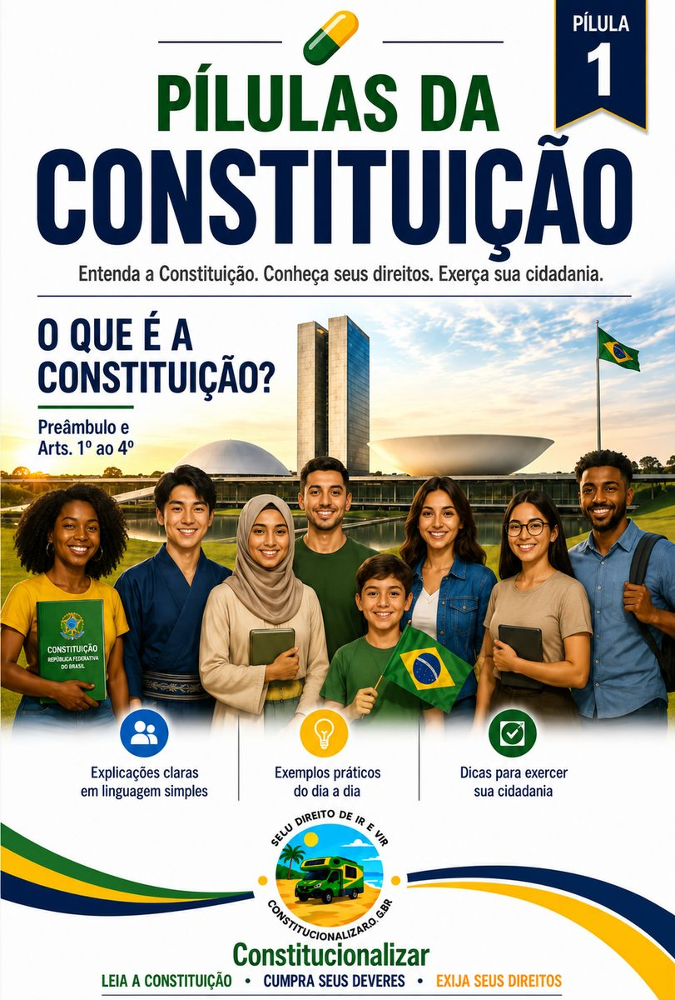
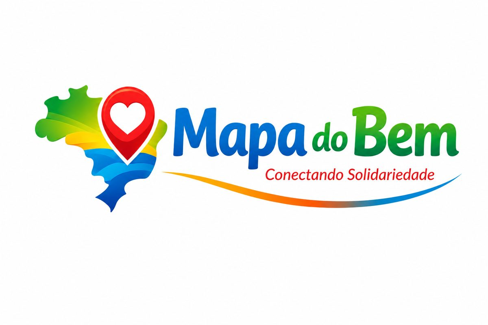
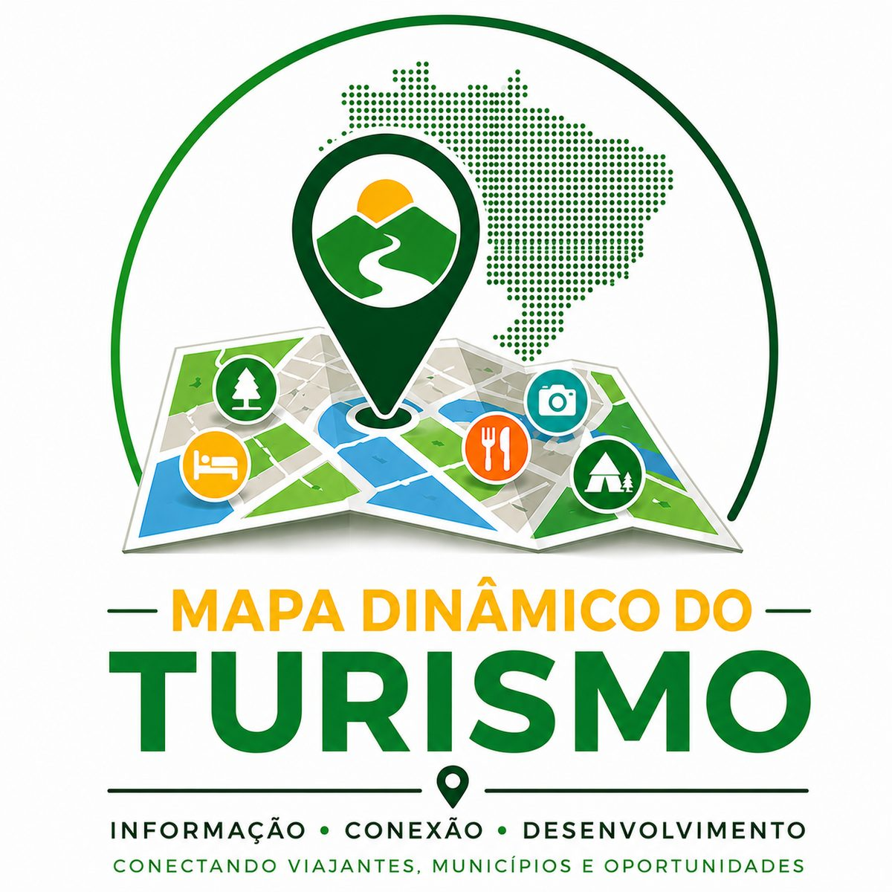

Benefícios aos associados
Parcerias com campings, descontos em produtos e serviços, sorteios e outras vantagens exclusivas para quem faz parte.
Chega de reclamar só pela internet!
Chega de indignação sem reação!
para lutar pelo nosso direito constitucional de Ir e Vir, pelo direito de propriedade e pelo cumprimento de sua função social
QUERO FAZER PARTE DA SOLUÇÃOMotorcampistas, campistas e turistas têm direito de ir e vir no Brasil ou só têm o dever de pagar taxas, impostos e multas?
O acesso às praias é livre e franco, como prevê a Lei nº 7.661/1988, ou pode ser condicionado ao pagamento de taxas e pela imposição de barreiras indiretas?
A autonomia municipal pode aniquilar direitos e princípios assegurados pela Constituição em uma análise de ponderação?
02
Nossa luta começou quando tentamos documentar nosso motorhome, a Elis Regina. Precisamos processar o Detran/SP para cumprir esse dever. Conquistamos a documentação e R$ 5.000,00 por danos morais.
📄 Processo nº 0013197-08.2020.8.26.0071
Em janeiro de 2024, recebemos uma multa de R$ 8.900,00 no Guarujá/SP, mesmo amparadas por Mandado de Segurança. Levamos o caso ao Ministério Público, que ajuizou uma ADI contra a Lei Complementar nº 291/2021. Em novembro de 2025, o TJ/SP declarou a legislação inconstitucional.
📄 Mandado de Segurança nº 1000286-02.2023.8.26.0536📄 ADI nº 2126901-42.2024.8.26.0000
Porém, nada é tão ruim que não possa piorar: Guarujá aprovou outra lei, prevendo Taxa de Turismo para todos os tipos de veículos, não apenas motorhomes. Também vamos lutar contra essa nova lei!
A caminho de Bertioga/SP, para o casamento dos amigos Má e Carlos, do @Favela's Motorhome, nossa Elis sofreu uma tentativa de homicídio por envenenamento com diesel.
Nossa Elis só bebe gasolina e álcool — Por sinal, bebe mais que a gente e Zeca Pagodinho juntos!
Processamos o posto: VR$ 3.000,00 por danos morais e R$ 1.460,00 por danos materiais!
📄 Processo nº 4000481-65.2026.8.26.0071/SP
03
Antes de formalizar a Constitucionalizar, Gizele buscou soluções administrativas nos Ministérios Públicos sobre Guarujá/SP, Saquarema/RJ, Guarapari/ES, São Tomé das Letras/MG e Mucugê/BA, sem soluções abrangentes além da ADI de Guarujá.
Em Guarapari, a situação piorou: Criaram “barreiras sanitárias” contra a entrada de turistas transportando alimentos.
Durante a ação de Guarujá, buscou apoio para sustentação oral: a Defensoria Estadual alegou que o MP já atuava; as OABs de Bauru e Guarujá não responderam; e uma associação de campismo informou que atuava no Legislativo.
O problema é nacional e recorrente: restrições ao direito de ir e vir, à propriedade e sua função social avançam sem resistência coordenada. Isso precisa mudar!
04
Após formalizar a Constitucionalizar, encaminhamos dois requerimentos ao MPF (Procuradoria Federal dos Direitos dos Cidadãos) e à Defensoria Pública da União, buscando soluções nacionais e definitivas para:
Normas de 18 municípios que restringem a circulação de campistas e motorcampistas.
Cobranças pelo ingresso ou circulação de veículos em 10 municípios praianos.
Também relatamos à PFDC dificuldades de motorcampistas itinerantes para receber atendimento pelo SUS sem comprovante de residência.
05
Resumidamente, o MPF arquivou as demandas sobre restrições a motorhomes, alegando particularidades das normas municipais, e encaminhou a análise das taxas de turismo aos órgãos locais.
A DPU também arquivou as demandas, considerando-as questões individuais fora de sua atuação.
Nossa preocupação é que essa análise fragmentada perpetue a insegurança jurídica, permitindo novas restrições nos mais de 5.500 municípios do país.
Buscamos o reconhecimento da dimensão nacional do problema e uma solução que enfrente suas causas, não apenas seus efeitos.
07
Não precisamos de associados para comprar bolsas, sapatos ou viagens, nem apenas para manter a Constitucionalizar funcionando. Manter a associação pequena é barato. Custa cerca de R$ 1.000,00 mensais, valor que podemos pagar sozinhas, sem nenhum problema. Mas, isso não basta: Precisamos de associados para realizar projetos grandes!
Precisamos crescer, fortalecer nossa representatividade nacional e contratar um escritório jurídico altamente qualificado e multidisciplinar capaz de enfrentar os municípios que restringem nossos direitos em igualdade de condições - Isso não vai custar barato.
Essa causa não é só nossa. Nos voluntariamos para lutar por essa causa, mas precisamos de apoio. Sozinhas não vamos sair de onde estamos.
Não precisamos de milhões de seguidores. Precisamos de apenas 2.000 associados contribuindo com R$ 30,00 por mês. Tenham certeza que esses recursos serão investidos de forma transparente em nossa causa.
Temos certeza: Poucas pessoas, unidas por uma pequena contribuição, podem viabilizar grandes mudanças para muita gente.
NOSSA META: 2.000 ASSOCIADOS
Contribuição: R$ 30,00 por mês
FAÇA PARTE DA SOLUÇÃO
NOSSA META
Contribuição: R$ 30,00 por mês
08
ATENÇÃO: A CONSTITUCIONALIZAR PODE NÃO SER PARA VOCÊ!
A Constituição Federal diz que ninguém poderá ser compelido a associar-se ou a permanecer associado (Art. 5º, XX).
Precisamos de associados que:
Entendam que o compromisso com a Constituição e a democracia é como um casamento: deve ser honrado na saúde e na doença, na riqueza e na pobreza, na alegria e na tristeza — não apenas quando convém ou coincide com suas convicções pessoais.
Respeitem as decisões judiciais, inclusive desfavoráveis, e compreendam que a nossa caminhada pode ser longa.
Entendam que público nem sempre significa gratuito. Não existe almoço grátis! Defendemos campings públicos, cuja decisão sobre gratuidade cabe exclusivamente ao município.
Respeitem a regulamentação legítima do acampamento, desde que as restrições não confundam acampamento em via pública com restrições indevidas à circulação, ao estacionamento e à parada. As ruas pertencem a todos e nós também temos o direito legítimo de ir e vir!
Percebam o campismo como uma alternativa rica de lazer que deve estar acessível para crianças, jovens, adultos e idosos.
Nós fizemos a escolha de defender os direitos de todos, associados ou não. Não podemos garantir resultados, mas garantimos que:
Se não respeitar esses valores, por favor, não se associe.
NINGUÉM NA FACE DA TERRA VAI LUTAR MAIS DO QUE A GENTE POR ESSA CAUSA!
09
Parcerias com campings, descontos em produtos e serviços, sorteios e outras vantagens exclusivas para quem faz parte.
Ajuizaremos ações coletivas e individuais relacionadas às nossas causas, buscando enfrentar as restrições de forma ampla e contribuir para a formação de jurisprudência que fortaleça a segurança jurídica.
Manteremos uma atuação extrajudicial complementar, inicialmente, com encaminhamentos de demandas aos órgãos competentes e vocacionados à defesa coletiva, sempre que essa estratégia puder contribuir para a solução dos problemas.
Diálogo com os Poderes Executivo e Legislativo para propor e aprimorar políticas públicas, leis, regulamentações e infraestrutura voltadas ao turismo e ao exercício dos direitos constitucionais.
Conscientização, informação e diálogo com cidadãos, motorcampistas, campistas, associações de moradores e demais organizações da sociedade civil, fortalecendo nossa rede de participação e cooperação em todo o país.
Trabalharemos de forma coordenada para enfrentar as causas dos problemas, e não apenas seus efeitos, buscando soluções amplas, gerais e definitivas.
11
Gizele, Silvana e Lívia são os rostos e as vozes da Constitucionalizar.
Casadas há oito anos, Gizele e Silvana são proprietárias do motorhome Elis Regina, uma Renault Trafic 1998 que é conhecida por preferir andar de primeira classe nos guinchos da Porto Seguro! Lívia, sobrinha das duas, apaixonada por viagens, representa os turistas sem motorhome.
Todas temos profissão e renda próprias - Não dependemos da Associação Constitucionalizar: Gizele é servidora pública; Silvana, podóloga, enfermeira e aposentada; Lívia, assistente social e empreendedora.
Não criamos a Constitucionalizar para viver dos problemas. Queremos soluções amplas, gerais e definitivas.
Hoje, trabalhamos voluntariamente. Quando a associação estiver estruturada, nossa remuneração será de um salário mínimo por fundadora a cada 1.000 associados — dois salários mínimos para cada uma ao atingirmos a meta de 2.000 associados.
Valor modesto diante da responsabilidade assumida, da grandeza da missão e das dificuldades que enfrentaremos.
12
A Constitucionalizar acredita que mais que um hobby, mais que uma terapia, o campismo precisa ser visto como uma cultura, porque a cultura cria mercado; o mercado gera dinheiro; o dinheiro cria oportunidades; as oportunidades geram negócios; os negócios constroem empresas; as empresas criam empregos; os empregos contribuem para a estabilidade social; e a estabilidade social transforma o mundo em um lugar melhor para todos.
Contribuir para transformar a cidadania no laço que une o povo — um valor maior do que todo o dinheiro do mundo pode comprar.
Contribuir para fazer da cidadania o ar que cada brasileiro respira: desde que nasce até o último suspiro.
T — TRABALHO
E — ÉTICA
T — TRANSPARÊNCIA
O — OBSTINAÇÃO
Leia a Constituição - Cumpra seus deveres - Exija seus direitos
A cidadania é um instrumento de sobrevivência em um mundo cada vez mais dominado por mercado financeiro, gigantes da tecnologia, inteligência artificial e robôs fissurados em distrair o povo com o novo pão e circo, que tem o objetivo real de acumular mais dinheiro e mais poder nas mãos de um seleto grupo de humanos.
No atual planeta Terra, cidadania não é luxo. É necessidade!
NOSSAS INICIATIVAS

Mais liberdade, segurança e turismo para todos.
*Retomaremos ao atingirmos 1.400 associados.

Levando a Constituição para o dia a dia dos brasileiros. Porque cidadania começa pelo conhecimento da Constituição.
*Iniciaremos ao atingirmos 1.400 associados. Grátis para associados e pago para não associados.

Constituição Federal em linguagem simples. Aprenda seus direitos de forma clara e acessível.
*Publicação quinzenal gratuita em pdf para associados e não associados. Lançamento em vídeo ao atingirmos 100 associados.

Conectando quem quer ajudar a quem precisa. Fortalecendo projetos sociais em todo o Brasil.
*Início imediato.

Informações turísticas oficiais integradas em um só lugar.
*Início imediato.
Planejamento, atuação e transparência em defesa dos direitos coletivos. Um Portal da Transparência da Associação Constitucionalizar para que o associado possa acompanhar nossa Mesa de Trabalho e saiba o que pretendemos fazer, o que estamos fazendo e o que já fizemos.
*Início imediato.
Conheça nossas ações, conquistas e novidades.
ACOMPANHAR NOSSOS CANAIS ↗Acreditamos que uma sociedade mais justa começa pelo conhecimento dos direitos e deveres de cada cidadão.
Por isso, a Constitucionalizar disponibiliza gratuitamente o e-book Pílulas da Constituição, uma obra criada para apresentar a Constituição Federal em linguagem simples, acessível e objetiva.
Porque conhecer seus direitos é o primeiro passo para defendê-los.
Cadastro realizado com sucesso!
BAIXAR E-BOOK GRATUITAMENTEEM BREVE Link provisório — o link definitivo será enviado para o seu e-mail.